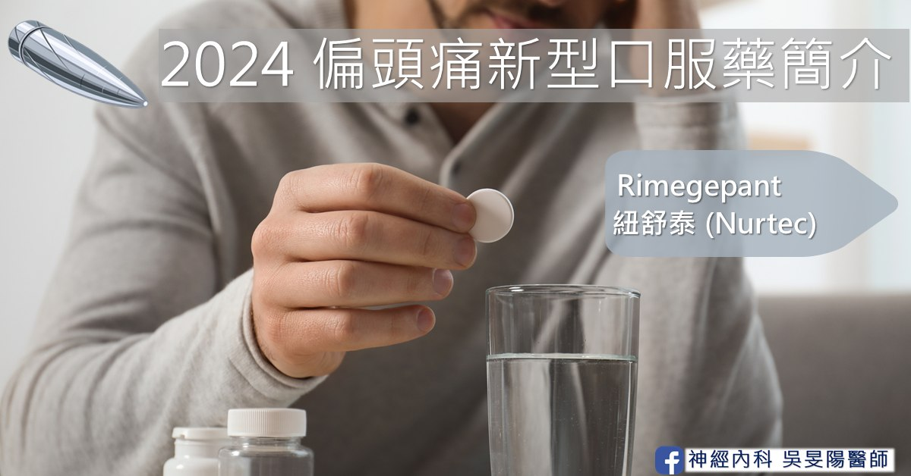

偏頭痛標靶藥│2024 新型口服Gepant － Rimegepant 紐舒泰

本文將接續介紹台灣的新型偏頭痛之急性止痛口服用藥 – Rimegepant（Nurtec、紐舒泰）。目前台灣已經上市，博愛醫院藥局也在 2026 年初引入囉！有興趣的朋友歡迎掛號諮詢。
偏頭痛如何影響一個人的生活
偏頭痛發作不至於死人，但卻會讓人生不如死。身為全球第二大造成失能的疾病，除了影響職業生涯，更會影響病人的人際關係。一篇橫跨北美洲、南美洲、歐洲、中東、以及亞太地區的跨國研究指出，約有 6 成的偏頭痛病人因病影響了他們的人際關係。有 7 成的偏頭痛病人職業生涯受影響。
資料來源：Martelletti P, et al. J Headache Pain 2018;19(1):115
其收案對象共有 11,266 人，其中有 85% 的病人，因為偏頭痛感到無助、憂鬱、或是不被理解。有 83% 的有睡眠困難，有 55% 的人害怕下一次發作，有 49% 的人表示日常生活或是個人活動受到限制。這些病人在過去 12 個月內，有 38% 因為發病需要去急診就醫，有 23% 的受訪者因偏頭痛需在醫院過夜。
因為請假或求診而造成經濟負擔也相當可觀。根據歐洲於 2012 的一篇科學研究指出，在歐盟國家，估算每位患者在每一年，花在偏頭痛上面的直接費用（藥費、門診就醫、住院治療和檢查）間接費用（請假和工作效率減少）。根據統計，偏頭痛的每人每年平均費用為 1,222 歐元，折合新台幣約為 4～5 萬元。若配合盛行率估計，18～65 歲每年因頭痛衍生的花費為 1,730 億歐元，其中偏頭痛占了 64%，也就是 1,110 億歐元（新台幣約為 3～4 兆元）。
現行偏頭痛的止痛藥已有許多選項，為何還需要新藥呢？
根據台灣頭痛學會於 2022 年出版的偏頭痛急性發作治療準則，目前常見止痛藥物中建議的藥物為「專一性」的翠普登類（Triptan）或麥角胺類（Ergotamine）藥物，以上可再搭配「非專一性」藥物的普拿疼（Acetaminophen）、非類固醇消炎藥（NSAIDs）、止吐藥物等等。可參考頭痛藥物圖鑑。
上述藥物當中，有一定療效，但是也有以下限制：
1. 副作用可能讓病患不願長期使用
以翠普登類（Triptan）藥物來說，國內的兩種藥物：英明格（Imigran）以及羅莎疼（Rizatan），副作用包括：噁心嘔吐、嗜睡、頭暈。四肢感覺異常、臉潮紅、胸口和頸部緊繃或刺痛感亦可發生。根據資料顯示，儘管翠普登的不良反應多為暫時性，仍有 4～5 成的病人在服用翠普登藥物之後，在 24 小時內產生副作用。
治療準則亦提到，北榮一篇針對台灣健保資料的研究發現，在第一次使用翠普登藥物後，追蹤 2 年內仍持續使用的比率只有 4%。丹麥於 2021 年發表了一篇歷時 25 年的全國數據分析，首次使用翠普登後 5 年內不再使用的比率高達 43%。
2. 藥效可能減退，需併服其他藥物
資料顯示，有 2～3 成的患者表示，長期服用翠普登類（Triptan）藥物之後，不知是否藥效減退，一天之內會需要再重複用藥，或者是必須搭配其他非類固醇消炎藥或是普拿疼。儘管複方藥物的搭配是目前治療準則建議，但是隨著藥量或是藥費增加，病友也會感到擔心。
3. 可能引起藥物過度使用頭痛
所謂的藥物過度使用頭痛，指的是長期過度使用止痛藥之後，反而導致頭痛的頻率和嚴重程度緩慢的增加，最終演變為幾乎每日照三餐吃止痛藥，卻仍有頭痛發作，但是不吃也會痛起來的惡性循環。臨床上若平均一週有兩天以上服用翠普登、麥角胺，便有可能是藥物過度使用頭痛。
像這樣彷彿止痛藥越吃越痛的情形，可以知道止痛藥物也是會成癮的。因此醫師在開立偏頭痛藥物時，也需注意病人服藥頻率，以避免過度頻繁的止痛藥使用。
4. 心血管疾病高風險因子的病人，止痛藥物需謹慎使用
背後原因在前幾篇已有詳細說明。因為它們在減少 CGRP 的釋放時，也可能會使其他器官的血管收縮。所以翠普登在心血管、腦血管疾病等患者，一般不建議使用。麥角胺類藥物，針對上述族群更是禁止使用。
至於其他非專一性藥物，當然比較不會有此類疑慮，但是止痛效果自然就比不上專一性藥物了。
綜合以上原因，台灣仍有部分偏頭痛病友，因現有的急性止痛藥物仍有限制，需要一個突破上述限制的新藥物。
相關臨床試驗
事實上，早在 2000 年就發展出第一代的 Gepant 類藥物，學名叫做 Telcagepant，但是在試驗過程中發現其有明顯肝臟的毒性，因此藥廠終止了此藥開發。
Rimegepant 的實證療效來自於 3 個臨床試驗，分別是：
- 美國於 2019 年發表的雙盲性試驗，支持 Rimegepant 有效改善偏頭痛急性發作的研究
- 英國與美國於 2019 年發表的雙盲性試驗，同樣支持療效。其研究概述可以參考葉亘耕醫師的貼文
- 韓國與中國於 2023 年發表的雙盲性試驗
上述中，我們來看比較新，而且針對亞洲族群的第 3 個研究。其收案對象為至少 1 年偏頭痛病史的成年人。在這 1,340 位病人中，年齡大多在 30～40 歲，女生約佔了 8 成。他們每個月有 2～8 次中度或重度偏頭痛發作，發作天數都小於 15 天（即符合陣發性偏頭痛的族群），且這些病人都沒有服用急性止痛藥物，單次頭痛發作的時間可以長達 12～16 小時。
值得注意的是，試驗過程為了安全起見，這些病人們在過去半年之內，不能同時身患尚未控制或是不穩定的心血管疾病，包括心肌梗塞、冠狀動脈疾病、腦中風、或是接受心臟相關手術等等。
他們以 1：1 的比例被隨機分配到兩種組別，一組服用安慰劑，另一組服用 75 mg 的 Rimegepant。每人需記錄在服藥後 2 個小時無疼痛，以及沒有伴隨偏頭痛的症狀（噁心感、怕光、怕吵）。為了測試新藥的持續止痛效果，收案對象每天服藥之後，若仍感頭痛，可以再多服用其他止痛藥物（例如普拿疼、非類固醇消炎藥、止吐藥等等）。
- 在給藥後兩個小時，Rimegepant 的組別可「完全」緩解疼痛的比例為 20%，相較於安慰劑組別為 11%
- 服藥後不會有噁心、怕光、怕吵等伴隨症狀的比例為 50%，安慰劑組則為 36%
- 服藥後可以回到工作崗位或是正常生活的比例為 41%，安慰劑組為 24%
- 服藥後 24 小時內，因為頭痛復發或是藥效不佳，而需要再吃其他止痛藥物的病人比例中，Rimegepant 的組別為 8%，安慰劑組為 20%
上面四種指標，都有達到顯著的差異性。
資料來源：Yu S, et al. Lancet Neurol 2023;22(6):476-484
資料來源：Yu S, et al. Lancet Neurol 2023;22(6):476-484
藥物副作用
資料來源：Yu S, et al. Lancet Neurol 2023;22(6):476-484
從針對亞洲族群的研究，與安慰劑相比，Rimegepant 常見的副作用為蛋白尿（1.1%）、噁心感（1.04%）、泌尿道感染（0.74%）、及血液中肌酸酐上升（0.74%）。特別的是此種藥物組別中導致噁心感的比率為 1.04%，安慰劑組卻是 2.6%，噁心感是相對有減少的。
由上圖可知，Rimegepant 的副作用與安慰劑組相比，幾乎沒有什麼差別！且副作用發生的比率都在個位數的占比而已。
Rimegepant（Nurtec® ODT，紐舒泰®）藥物說明
所幸這個藥物已經在台灣上市，在博愛醫院也可以直接開立！國人不用大老遠跑去香港買 XD。
適應症：適用於偏頭痛之急性止痛，以及陣發性偏頭痛的長期預防。
在台灣，陣發性偏頭痛的預防並未核准，但是研究證實有效的！
劑量：需要時，每天一次 75 毫克（mg）的 Rimegepant
- 可隨餐服用，也可空腹使用。
用法：此藥為舌下口溶錠，含在口中會自己溶解，不用配水吞服。這樣的設計我個人覺得有兩個好處。
- 偏頭痛患者發病時往往會合併噁心嘔吐的症狀，所以口服藥物可能會吞不下去，甚至可能在藥物被身體吸收前，就被吐出來了⋯
- 作為急性止痛藥物，大部分的病人都會隨身攜帶。因為不用配水吞服，如果當時人在戶外跑業務、出公差的時候，當下身邊可能會沒有水可以喝，這時候口溶劑的設計就方便許多。
- 不過也須留意，服藥時要拆包裝的時候，手部需要保持乾燥。不然的話如果手濕濕的情況下碰到藥物的話，它會快速崩解，這樣到時候吃藥可能會有困難 XD。
- 半衰期：11 個小時
特殊族群：重度肝功能不全病人、或是末期腎臟病病人，不建議使用。
- 對於兒童病人（< 18 歲）、懷孕婦女、或是哺乳婦女的安全性和療效狀況如何。目前尚無資料。
藥物交互作用：
- 當 Rimegepant 與 CYP3A4 的抑制劑併用、CYP3A4 誘導劑（例如部分的抗癲癇藥物），或是與 P-gp 的強效抑制劑（如血壓藥物 verapamil）併用時，藥物劑量便需要調整，建議諮詢醫師喔！
- 禁忌症：對藥物成分有過敏現象的人
| NURTEC 紐舒泰 | 劑量 |
|---|---|
| 一般成人 | 75mg |
| 輕～中度腎功能不全 | 不需調整劑量 |
| 末期腎病（肌酸酐清除率 < 15 ml/min）或洗腎患者 | 避免使用 |
| 輕～中度肝功能不全 | 不需調整劑量 |
| 重度肝功能不全 | 避免使用 |
| 老年人（>65 歲） | 不需調整劑量 |
什麼狀況會考慮挑選口服 Rimegepant 藥物
- 翠普登（Triptan）使用藥效不佳的個案
- 有心血管疾病之高風險個案
- 害怕誘發藥物過度使用頭痛的個案
- 偏頭痛伴隨症狀之噁心感太嚴重，無法吞藥的個案
- 非重度肝功能不全病人、也非末期腎臟病的病人
- 經濟較寬裕的族群
結語
- 偏頭痛不只是頭痛，反覆發作的頭痛不僅影響工作、影響睡眠，更會影響人際關係，也帶來經濟負擔。
- 翠普登（Triptan）藥物做為偏頭痛急性止痛的第一線用藥，已經持續了數十年。然而目前的專一性用藥，或者是非專一性用藥，仍有部分限制需要克服。
- 台灣在 2024 年所引進的新藥，Gepant 類藥物可算是偏頭痛病人藥物的明日之星。此外它的副作用卻又比翠普登藥物少一些，藥效持續時間更長。
- Rimegepant 透過三個臨床試驗證實，在止痛方面，對於偏頭痛皆有優於安慰劑的效果。在台灣已被核准作為偏頭痛急性止痛口服用藥。
- 常見的副作用以蛋白尿，噁心感為主。
延伸閱讀
偏頭痛藥物
- 偏頭痛「預防藥治療」攻略：傳統口服藥 (一)
- 偏頭痛「預防藥治療」攻略：長效針劑 (二)
- 偏頭痛「預防藥治療」攻略：長效針劑比較和選擇 (三)
偏頭痛預防性治療攻略：新型口服標靶藥物 (四)
參考資料
- 2022 台灣偏頭痛急性發作治療準則
- NURTEC ODT 紐舒泰 中文仿單